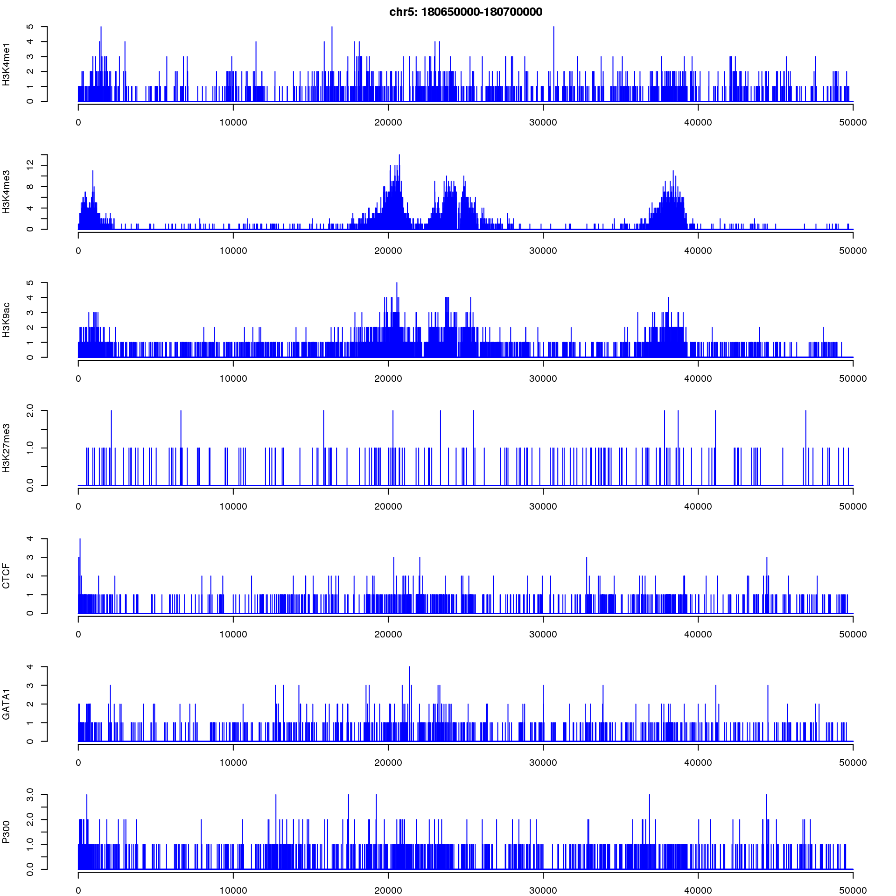

Last updated: 2018-04-10
Code version: 9ce7caf
/project/mstephens/data_smoothing/chipseq/bam//project/mstephens/data_smoothing/chipseq/bw/cat /project/mstephens/data_smoothing/chipseq/bam_filelist.txtH3k4me1_rep1 wgEncodeSydhHistoneK562H3k4me1UcdAlnRep1
H3k4me1_rep2 wgEncodeSydhHistoneK562H3k4me1UcdAlnRep2
H3k4me3_rep1 wgEncodeSydhHistoneK562H3k4me3bUcdAlnRep1
H3k4me3_rep2 wgEncodeSydhHistoneK562H3k4me3bUcdAlnRep2
H3k9ac_rep1 wgEncodeSydhHistoneK562H3k9acbUcdAlnRep1
H3k9ac_rep2 wgEncodeSydhHistoneK562H3k9acbUcdAlnRep2
H3k27me3_rep1 wgEncodeSydhHistoneK562H3k27me3bUcdAlnRep1
H3k27me3_rep2 wgEncodeSydhHistoneK562H3k27me3bUcdAlnRep2
H3k27me3_rep1 wgEncodeSydhHistoneK562H3k27me3bUcdAlnRep1
H3k27me3_rep2 wgEncodeSydhHistoneK562H3k27me3bUcdAlnRep2
CTCF_rep1 wgEncodeSydhTfbsK562CtcfbIggrabAlnRep1
CTCF_rep2 wgEncodeSydhTfbsK562CtcfbIggrabAlnRep2
GATA1_rep1 wgEncodeSydhTfbsK562Gata1bIggmusAlnRep1
GATA1_rep2 wgEncodeSydhTfbsK562Gata1bIggmusAlnRep2
P300_rep1 wgEncodeSydhTfbsK562P300IggrabAlnRep1
P300_rep2 wgEncodeSydhTfbsK562P300IggrabAlnRep2mkdir -p /project/mstephens/data_smoothing/chipseq/bw
mkdir -p /project/mstephens/data_smoothing/chipseq/log
cd /project/mstephens/data_smoothing/chipseq/log
while IFS=$'\t' read -r -a myArray
do
echo "${myArray[0]}"
filename=${myArray[1]}
echo $filename
sbatch ~/projects/data_smoothing/data_smoothing_workflow/code/count_5end_coverage_bamToBigwig_bothstrand.sbatch \ /project/mstephens/data_smoothing/chipseq/bam/${filename}.bam /project/mstephens/data_smoothing/chipseq/bw/${filename}
done < /project/mstephens/data_smoothing/chipseq/bam_filelist.txtcat /project/mstephens/data_smoothing/regions/example_region1.bedchr5 180650000 180700000/project/mstephens/data_smoothing/chipseq/examples/
dir_examples=/project/mstephens/data_smoothing/chipseq/examples/
mkdir -p ${dir_examples}
dir_bw=/project/mstephens/data_smoothing/chipseq/bw/
bed_region=/project/mstephens/data_smoothing/regions/example_region1.bed
while IFS=$'\t' read -r -a myArray
do
echo "${myArray[0]}"
filename=${myArray[1]}
echo $filename
bwtool extract bed ${bed_region} ${dir_bw}/${filename}.bw ${dir_examples}/example_region1_${filename}_counts.txt
done < /project/mstephens/data_smoothing/chipseq/bam_filelist.txt
extract_counts <- function(filename_list){
counts_total <- 0
for(filename in filename_list){
bed_counts <- read.table(filename, header = F, stringsAsFactors = F)
colnames(bed_counts) <- c("chr", "start", "end", "width", "counts")
counts <- strsplit(bed_counts$counts, split = ",")[[1]]
counts[counts == "NA"] <- 0
counts <- as.numeric(counts)
counts_total <- counts_total + counts
}
return(counts.l = list(chr = bed_counts$chr, start = bed_counts$start, end = bed_counts$end, counts = counts))
}
dir_examples <- "/project/mstephens/data_smoothing/chipseq/examples/"
counts_H3k4me1.l <- extract_counts(file.path(dir_examples,
paste0("example_region1_wgEncodeSydhHistoneK562H3k4me1UcdAln", c("Rep1", "Rep2"), "_counts.txt")))
counts_H3k4me3.l <- extract_counts(file.path(dir_examples,
paste0("example_region1_wgEncodeSydhHistoneK562H3k4me3bUcdAln", c("Rep1", "Rep2"), "_counts.txt")))
counts_H3K9ac.l <- extract_counts(file.path(dir_examples,
paste0("example_region1_wgEncodeSydhHistoneK562H3k9acbUcdAln", c("Rep1", "Rep2"), "_counts.txt")))
counts_H3K27me3.l <- extract_counts(file.path(dir_examples,
paste0("example_region1_wgEncodeSydhHistoneK562H3k27me3bUcdAln", c("Rep1", "Rep2"), "_counts.txt")))
counts_CTCF.l <- extract_counts(file.path(dir_examples,
paste0("example_region1_wgEncodeSydhTfbsK562CtcfbIggrabAln", c("Rep1", "Rep2"), "_counts.txt")))
counts_GATA1.l <- extract_counts(file.path(dir_examples,
paste0("example_region1_wgEncodeSydhTfbsK562Gata1bIggmusAln", c("Rep1", "Rep2"), "_counts.txt")))
counts_P300.l <- extract_counts(file.path(dir_examples,
paste0("example_region1_wgEncodeSydhTfbsK562P300IggrabAln", c("Rep1", "Rep2"), "_counts.txt")))title <- paste0(counts_H3k4me1.l$chr, ": ", counts_H3k4me1.l$start, "-",counts_H3k4me1.l$end)
par(mfcol = c(7,1))
par(mar = c(2,4,2,1))
par(bty="n")
plot(counts_H3k4me1.l$counts, main = title, type = "h", col = "blue", ylab = "H3K4me1", xlab = "")
plot(counts_H3k4me3.l$counts, type = "h", col = "blue", ylab = "H3K4me3", xlab = "")
plot(counts_H3K9ac.l$counts, type = "h", col = "blue", ylab = "H3K9ac", xlab = "")
plot(counts_H3K27me3.l$counts, type = "h", col = "blue", ylab = "H3K27me3", xlab = "")
plot(counts_CTCF.l$counts, type = "h", col = "blue", ylab = "CTCF", xlab = "")
plot(counts_GATA1.l$counts, type = "h", col = "blue", ylab = "GATA1", xlab = "")
plot(counts_P300.l$counts, type = "h", col = "blue", ylab = "P300", xlab = "")
sessionInfo()R version 3.4.1 (2017-06-30)
Platform: x86_64-redhat-linux-gnu (64-bit)
Running under: Scientific Linux 7.2 (Nitrogen)
Matrix products: default
BLAS/LAPACK: /usr/lib64/R/lib/libRblas.so
locale:
[1] LC_CTYPE=en_US.UTF-8 LC_NUMERIC=C
[3] LC_TIME=en_US.UTF-8 LC_COLLATE=en_US.UTF-8
[5] LC_MONETARY=en_US.UTF-8 LC_MESSAGES=en_US.UTF-8
[7] LC_PAPER=en_US.UTF-8 LC_NAME=C
[9] LC_ADDRESS=C LC_TELEPHONE=C
[11] LC_MEASUREMENT=en_US.UTF-8 LC_IDENTIFICATION=C
attached base packages:
[1] stats graphics grDevices utils datasets methods base
loaded via a namespace (and not attached):
[1] compiler_3.4.1 backports_1.1.2 magrittr_1.5 rprojroot_1.3-2
[5] tools_3.4.1 htmltools_0.3.6 yaml_2.1.16 Rcpp_0.12.14
[9] stringi_1.1.6 rmarkdown_1.8 knitr_1.19 git2r_0.21.0
[13] stringr_1.2.0 digest_0.6.15 evaluate_0.10.1This R Markdown site was created with workflowr